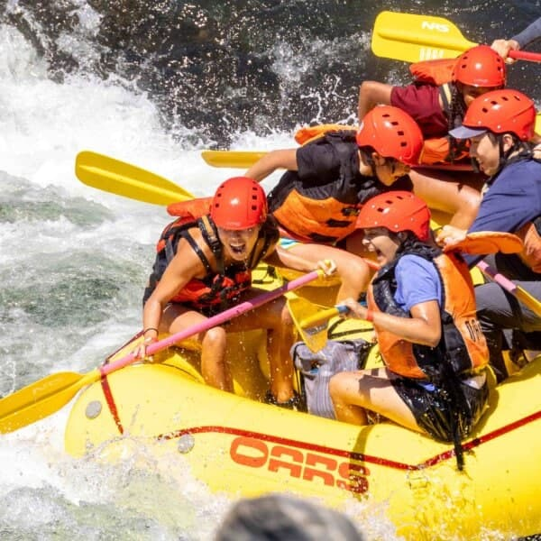
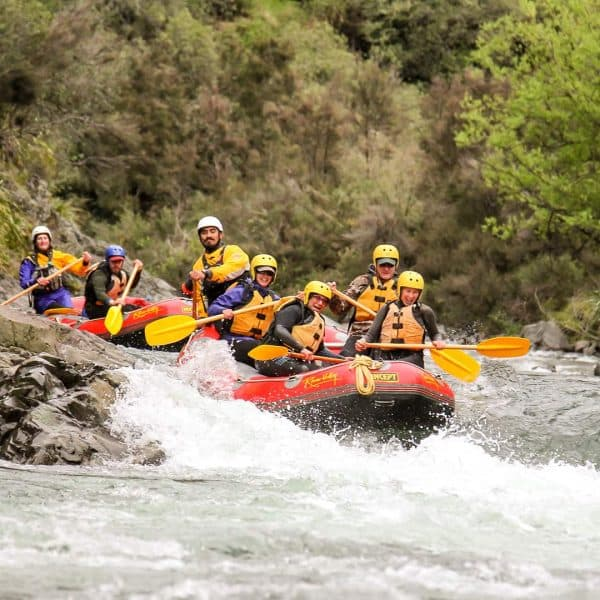
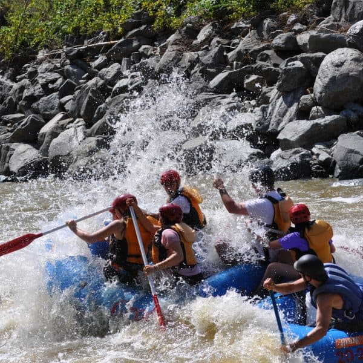
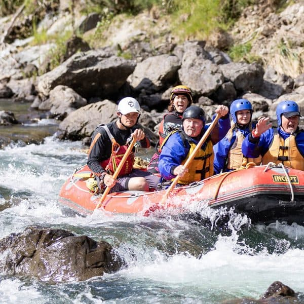
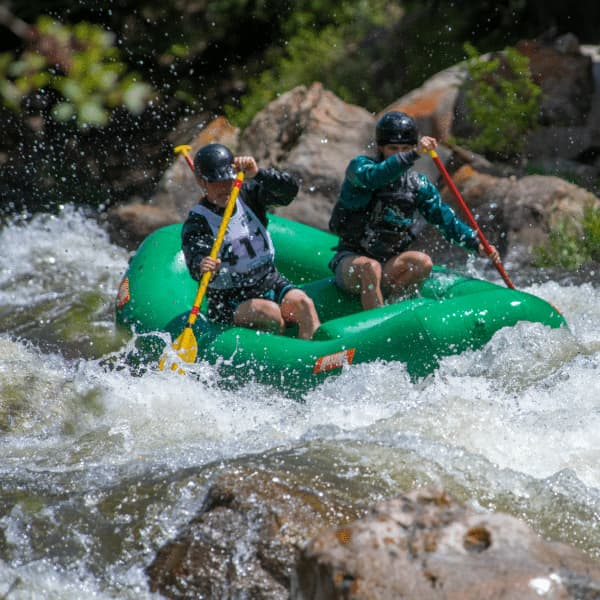
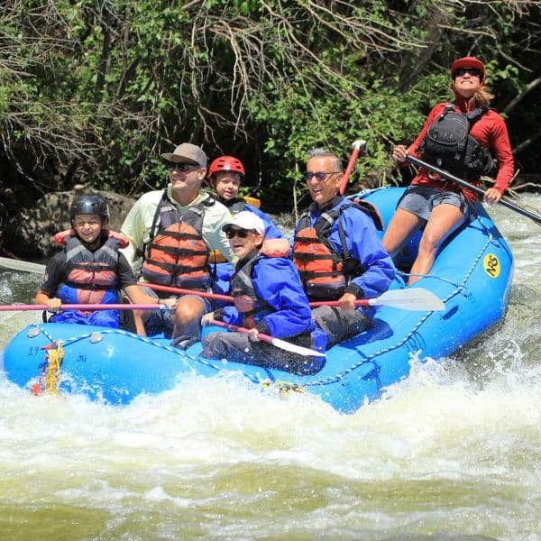
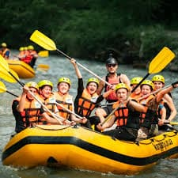

Trips
Are you interested on any trip?


Grand Canyon Rafting
Embark on the definitive wilderness odyssey as you navigate the emerald veins of the Colorado River through the heart of the Grand Canyon. This isn't just a rafting trip; it is a profound immersion into a geological cathedral two billion years in the most patient making. From the thunderous, adrenaline-charged surges of world-famous rapids like Lava Falls and Crystal to the serene, mirrored stretches of the inner gorge, every mile reveals a new layer of Earth's ancient history. Beyond the water, your journey leads you into hidden side-canyons to discover turquoise lagoons and moss-covered waterfalls accessible only by river. As the desert sun dips below towering 4,000-foot limestone walls, you'll find yourself
American river Rafting
Plunge into the heart of California’s gold country with an exhilarating rafting expedition down the American River. Renowned as one of the most popular whitewater destinations in the United States, the American River offers a perfect trifecta of adventure through its South, Middle, and North Forks. Whether you are navigating the constant, rolling Class III surges of the South Fork—ideal for families and first-timers—or braving the legendary "Tunnel Chute" and technical Class IV drops of the Middle Fork, the river delivers a relentless pulse of excitement. You’ll float through sun-drenched canyons rich with Forty-Niner history and lush riparian forests. After a day of tackling the "Troublemaker" or "Hospital Bar" rapids, the journey transitions








Pacifico River Rafting
Journey into a landscape of quiet grandeur along the Green River, where winding emerald waters carve through the heart of the high desert. This legendary waterway is defined by the breathtaking "Gates of Lodore," where the river plunges into a dramatic abyss of ancient, vermilion-colored sandstone. Unlike the relentless roar of other desert rivers, the Green offers a rhythmic balance of spirited Class III whitewater—like the technical drops of Disaster Falls and Hell’s Half Mile—interspersed with miles of glassy, tranquil floats through the "Park of the Flaming Gorge." Here, the silence is broken only by the call of a peregrine falcon or the splash of a bighorn sheep at the water's edge. Navigating the river feels like traveling through a living museum.